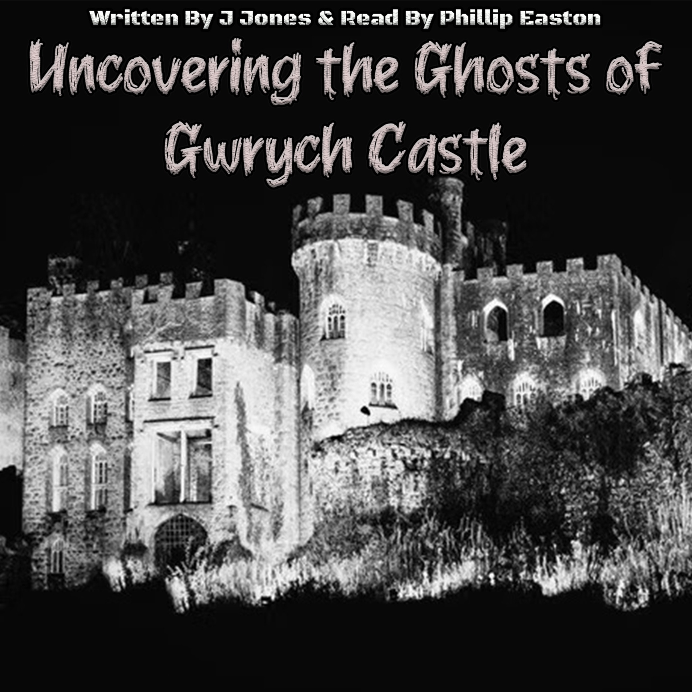

Dark Case Productions · Audiobooks

Written by J. Jones
Read by Phillip Easton
An audiobook journey into the history, legends, investigations and reported hauntings of Gwrych Castle.
£4.99
Buy audiobook · £4.99Digital audiobooks are supplied electronically; no physical goods are shipped.
Customer service: darkcaseaudios@gmail.com
Refund requests are considered in accordance with applicable UK consumer law and the circumstances of the purchase.
Where cancellation rights apply, they will be handled in accordance with applicable consumer law and the rules applying to digital content.
Terms & Conditions · Privacy Policy · Refund & Cancellation Policy · Contact